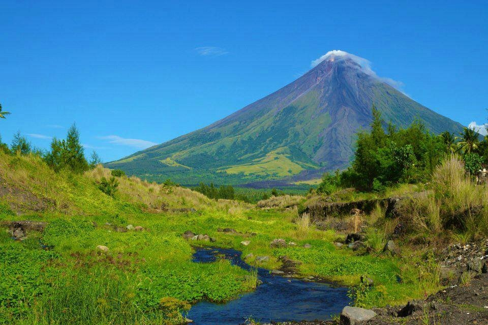
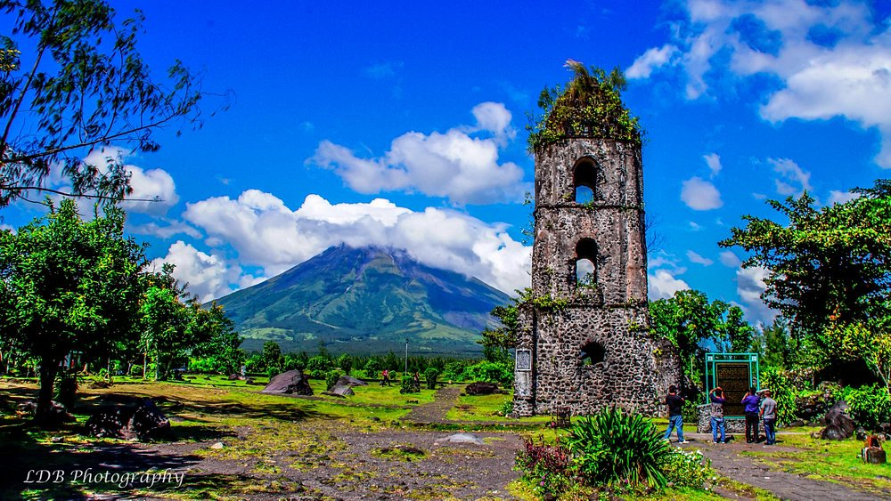
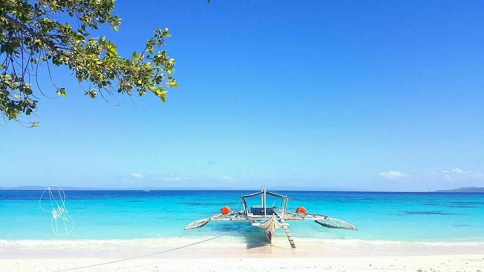
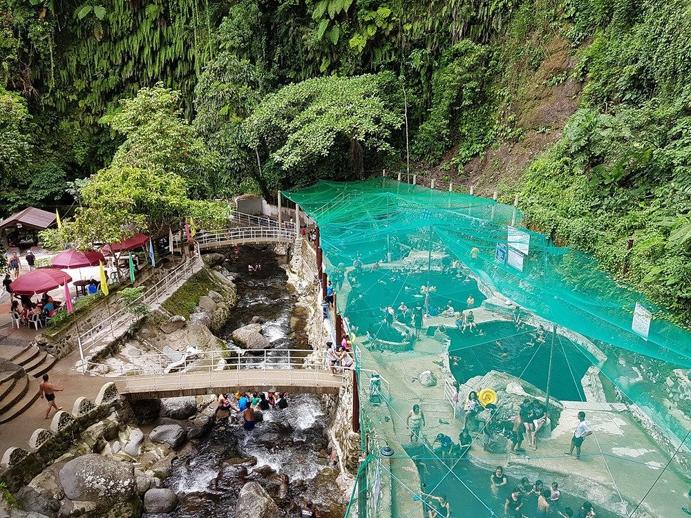
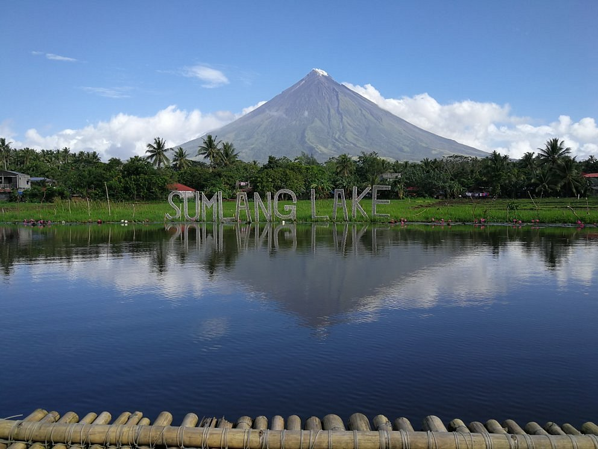

TOURIST SPOTS IN BICOL
by Cris Franco Cabalquinto
Mayon or also known as Mount Mayon and Mayon Volcano, is an active stratovolcano in the province of Albay in Bicol, Philippines. A popular tourist destination, it is renowned for its "perfect cone" owing to its symmetric conical shape, and is regarded as sacred in Philippine mythology.

The Cagsawa Ruins (also spelled as Kagsawa, historically spelled as Cagsaua) are the remnants of a 16th-century Franciscan church, the Cagsawa church. It was originally built in the town of Cagsawa in 1587 but was burned down and destroyed by Dutch pirates in 1636.

Subic Beach and Tikling Beach are premier,often-combined island-hopping destinations in Matnog, Sorsogon, famous for their natural, pinkish-white sand—tinted by crushed red corals—and clear turquoise waters. Subic features two main, developed sections (Subic Laki and Liit), while Tikling is known for its quiet, serene atmosphere and wild pigs.

Panicuason Hot Spring Resort and Adventure Park, located at the foot of Mount Isarog in Naga City, is a nature-focused retreat known for its therapeutic, sulfur-rich hot spring pools with temperatures up to. It features adventure activities like ziplining, zip-bikes, and hiking, offering a mix of relaxation and adventure roughly 25-30 minutes from downtown Naga.

Sumlang Lake in Camalig, Albay, is a popular 7-to-14-hectare eco-tourism destination renowned for its stunning, unobstructed views of the Mayon Volcano. It offers relaxing bamboo raft rides, kayaking, and locally crafted abaca furniture, making it an "Instagrammable" spot with a serene,, natural ambiance.
